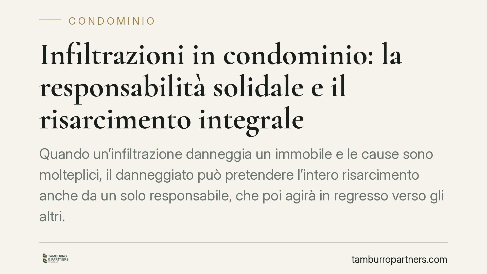

Infiltrazioni in condominio: la responsabilità solidale e il risarcimento integrale
Quando un'infiltrazione danneggia un immobile e le cause sono molteplici, il danneggiato può pretendere l'intero risarcimento anche da un solo responsabile, che poi agirà in regresso verso gli altri. È il principio della responsabilità solidale, consolidato nella giurisprudenza di legittimità. Vediamo cosa significa per condòmini e amministratori e come gestire il sinistro senza compromettere i propri diritti.

Il caso tipico
Un box auto subisce danni da infiltrazioni. L'acqua proviene da più punti: un lastrico solare degradato, parti comuni non manutenute, un terrazzo di proprietà esclusiva. Le cause concorrono, i responsabili sono diversi. A chi deve chiedere il danneggiato?
La risposta della giurisprudenza di legittimità è chiara e risponde a una logica di tutela del danneggiato: può rivolgersi a uno solo dei responsabili e pretendere l'intero.
Inquadramento normativo
La norma di riferimento è l'art. 2055 del Codice civile, che disciplina la responsabilità solidale nel fatto illecito.
Il primo comma stabilisce che, se il danno è imputabile a più persone, tutte sono obbligate in solido al risarcimento. "In solido" significa che ciascun responsabile risponde dell'intero debito: il danneggiato può scegliere a chi chiedere il risarcimento completo, senza dover frazionare la pretesa in base alla quota di colpa di ognuno.
Chi ha pagato l'intero non resta però inciso definitivamente. Il secondo comma gli riconosce il diritto di regresso verso gli altri coobbligati: la ripartizione interna avviene secondo la gravità delle rispettive colpe e l'entità delle conseguenze che ne sono derivate. Il terzo comma aggiunge una regola di chiusura: nel dubbio, le colpe si presumono di pari grado e il danno si divide in parti uguali.
La distinzione è decisiva. Verso il danneggiato vale la solidarietà (tutto, da uno solo); tra i corresponsabili vale la ripartizione proporzionale (ciascuno la sua parte). La rinuncia alla solidarietà non si presume: deve risultare in modo esplicito.
La legittimazione dell'amministratore
Quando il danno coinvolge parti comuni, entra in gioco anche il profilo processuale. Secondo gli artt. 1130 e 1131 del Codice civile, l'amministratore cura la conservazione delle parti comuni e rappresenta il condominio nelle liti relative. È dunque il soggetto legittimato a stare in giudizio per le controversie che riguardano, ad esempio, il lastrico solare o i pluviali condominiali.
Questo non esclude la responsabilità del singolo condòmino proprietario di una parte esclusiva (come un terrazzo) da cui promani parte dell'infiltrazione: anche lui può essere chiamato in solido.
Implicazioni pratiche
Per il danneggiato, la solidarietà è un vantaggio: individua il responsabile più solvibile o più facilmente raggiungibile e gli chiede l'intero, senza doversi far carico della prova sulla ripartizione delle colpe tra i vari soggetti.
Per il condòmino chiamato a pagare, il rischio è concreto: può trovarsi a corrispondere l'intero importo anche se la sua quota di responsabilità è minima. Il recupero verso gli altri passa poi per l'azione di regresso, che è un procedimento autonomo e successivo, con i propri tempi e oneri probatori.
Per l'amministratore, la gestione del sinistro richiede attenzione. Molti condomìni dispongono di una polizza "globale fabbricati", che copre tra l'altro i danni da acqua e le responsabilità verso terzi. La denuncia tempestiva e corretta è essenziale: un sinistro mal coordinato può pregiudicare non solo l'indennizzo, ma anche la successiva azione di regresso verso gli altri responsabili o verso le rispettive compagnie.
Cosa fare in concreto
- Documentate subito il danno. Fotografate, raccogliete perizie tecniche sull'origine dell'infiltrazione e conservate le fatture delle riparazioni: la prova del nesso causale è il cuore della controversia.
- Individuate tutti i possibili responsabili, non solo il più evidente: lastrico, terrazzi esclusivi, parti comuni, condòmini confinanti. Serve per impostare correttamente il regresso.
- Denunciate il sinistro alla compagnia nei termini di polizza e coordinate la posizione con l'amministratore, evitando dichiarazioni che possano compromettere la rivalsa.
- Verificate la legittimazione. Se il danno riguarda parti comuni, l'interlocutore processuale è l'amministratore ex artt. 1130-1131 c.c.; valutate se chiamare anche i proprietari di parti esclusive.
- Non rinunciate implicitamente ai vostri diritti. La solidarietà non si perde salvo rinuncia espressa: fatevi assistere prima di sottoscrivere transazioni o liberatorie.
La gestione di un'infiltrazione con più cause è tecnicamente più complessa di quanto appaia. Consigliamo di impostare fin dall'inizio la raccolta probatoria e il coordinamento assicurativo con un professionista, così da preservare sia il diritto al risarcimento integrale sia la successiva azione di regresso.
Disclaimer
Contributo informativo a cura di Tamburro & Partners Avvocati - Avv. Giuseppe Tamburro. Non costituisce parere legale.
Ogni condominio ha una storia a sé.
Se gestisci un'amministrazione e vuoi un confronto su una specifica questione condominiale, scrivi allo studio. Ti rispondiamo entro un giorno lavorativo.